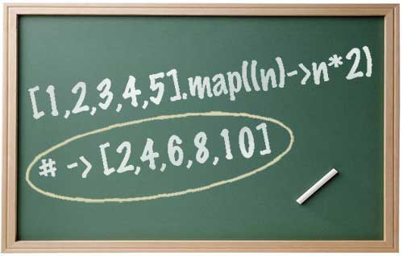
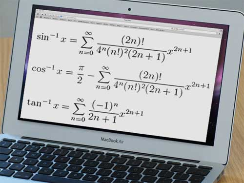
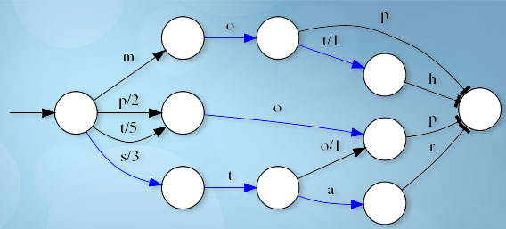
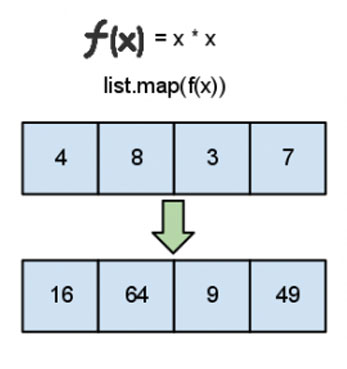
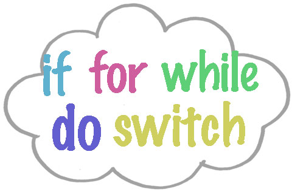

CoffeeScriptで理解する『関数型言語』

[ PR ]
前回、CoffeeScriptで理解する『ラムダ計算入門』という記事を書きましたが、今回はその続きで関数型言語を説明します。
ここ数年で良さが再確認されている「関数型言語」ですが、いまいちよく分からない方のために、身近なCoffeeScriptを使って説明していきます。
CoffeeScriptがよくわからない方は、公式ページ（英語）のリファレンスを見るか、Googleで検索して見て下さい。
ちなみに、以下のコードをオンラインで試すには、以下のサイトをおすすめします。
- CoffeeScript : CoffeeScript - repl.it
- JavaScript, Haskell : ideone.com
- Scala : Simply Scala
関数型言語とは

そもそも関数型言語とは、以下のような特徴を持ったプログラミング言語です。
- 歴史的にラムダ計算を元にしている
- ラムダ計算の特徴である、カリー化、遅延評価、型推論などの機能を持つ
- 変数や引数に格納できる関数である、第一級関数を持つ
- map, filter, fold などの特徴的な関数が存在する
- 純粋関数型言語は、次の特徴を持つ
- 変数や関数の値を変更することができない
- ある関数や式に同じ値を与えた場合、文脈によらず必ず同じ結果が返ってくる（参照透過性）
- ある関数や式を実行しても他の動作に影響を与えない（副作用（Side Effect）がない）
ちょっと言葉が難しいですが、一つ一つ丁寧に説明していきます。
関数型言語の「関数」の意味

関数型言語の「関数」とは、
- ラムダ計算で用いられる関数
- 数学上の関数
を示しています。
ラムダ計算の関数は前回説明したように、数学で用いられる関数を使っているので上記の２つの意味はほとんど同じです。
関数型言語は、ラムダ計算をルーツに持っている言語だというくらいで思っておけばいいと思います。
第一級関数
第一級関数が関数型言語の一つの特徴ですが、以下のコードを読むと分かりやすいです。
# CoffeeScript
# (1) 変数に関数を格納 =============
myfunc1 = (s) -> console.log(s)
myfunc1('Hello, first-person-function !')
# (2) 関数を引数に取る関数 =============
double = (n) -> n*2
apply = (f, n) -> f(n);
apply(double, 3) # 6なんとなく分かってもらえたでしょうか。JavaScriptでは当たり前にできることですね。
ちなみに、上記の(2)で出てきたapplyのような「関数を引数に取る関数」のことを高階関数といいます。
高階関数を使うと、以下のようなこともできます。
# CoffeeScript
Array.prototype.map = (callback) ->
ret = []
for a in this
ret.push(callback(a))
ret
[1,2,3].map((n)-> n*2) # [2,4,6]これはJQueryの$.mapもほとんど同じような実装をしていると思います。
$.map([1,2,3], (n)-> n*2) # [2,4,6]ということは、昔は珍しかった第一級関数も、今では広く使われているということですね。
純粋関数型言語は、変数や関数の値を変更することができない

この項だけは、HaskellとScalaを使います。
詳しく文法を説明しないので、なんとなく全体の感じだけつかんでもらえればOKです。
一般的に使われている「手続き型言語」では、変数の値を変更できるのはごく当たり前ですよね。
しかし、Haskellなどの純粋な関数型言語では、変数はありますが、値を変更することはできません。
# CoffeeScript (代入)
a = 1
b = 2
console.log(a + b) # 3
a = a + b
console.log(a) # 3-- Haskell (束縛)
main = do
let a = 1
let b = 2
print(a + b) -- 3
-- a = a + b 代入の構文自体がないちなみに、純粋関数型言語では代入ができないので、「値に名前をつけること」を束縛といいます。
関数型言語の中にはScalaのように代入ができるものも多いので、純粋関数型言語と区別して、非純粋関数型言語ということもあります。
// Scala
// varを使うと値の変更が可能
var a = 1
var b = 2
a = a + b
println(a) // 3
// valを使うと値の変更ができない（より純粋な関数型言語に近くなる）
val a = 1
val b = 2
a = a + b // ERRORこの「値の変更ができない」という性質のおかげでいくつかメリットがあるのですが、なんだか不便そうですよね。
実は、再帰などを使うことで手続き型言語とほとんど同じことができます。
# CoffeeScript
sum = 0
for i in [1..10]
sum += i # ここで値を変更している
console.log(sum) # 55-- Haskell
sumLoop i _sum =
if i > 10 then _sum
else sumLoop (i+1) (_sum+i) -- ここで実質的に値を変更
main = print(sumLoop 0 0) -- 55メリット
値の変更ができないことには以下のメリットがあります。
- 変数の値の変化がないため、コードを追うことが容易になる
- ある関数や式に同じ値を与えた場合、文脈によらず必ず同じ結果が返ってくる (＊)
- 途中で意図せず変数の値を変えてしまうことがないので、バグが少なくなる
特に(＊)の性質を参照透過性といいます。
参照透過性とは正反対に、関数や式を実行するたびに変数が変更されて他の動作に影響を与えることを、副作用（Side Effect）といいます。
つまり純粋関数型言語はコードの見通しがよく、副作用がないため、バグの混入が少ないということになります。
デメリット
逆にデメリットとしては、以下の点があります。
- 状態変化を伴う処理はすべて再帰に書き直す必要がある
- ループなどが書けないので、直感的にコードを書くことができない
この点を「改善」した関数型言語がScalaやLisp、OCamlです。
ただ、関数型言語のメリットを享受するためには、できるだけ副作用がないようにしたいですね。
map, filter, fold

前項の説明で、ループを再帰で表現していました。
CoffeeScriptで書くと以下のような感じです。
my_sum = -> ((i,sum) -> if i > 10 then sum else arguments.callee(i+1,sum+i))(0,0)
my_sum() # 55でもこれだと、元々の処理が分かりづらいですよね。
そんなときには、次のfold関数を使います。
foldLeft0 = (a,i,arr,func) ->
if i > arr.length-1
a
else
foldLeft0(func(a,arr[i]),i+1,arr,func)
foldLeft = (arr,init,func) -> foldLeft0(init,0,arr,func)
foldRight0 = (a,i,arr,func) ->
if i < 0
a
else
foldRight0(func(arr[i],a),i-1,arr,func)
foldRight = (arr,init,func) -> foldRight0(init,arr.length-1,arr,func)
add = (a,b) -> a + b
sum = (arr) -> foldLeft(arr,0,add)
sum([1..10]) # 55
foldLeft([1..10], 0, add) # 55
foldRight([1..10], 0, add) # 55
# 分かりやすいように別の例も
foldLeft(['A','B','C'], 'z', add) # zABC
foldRight(['A','B','C'], 'z', add) # ABCzちょっと慣れないと分かりづらいですが、以下のような計算をしています。
# foldLeft
((((((((((0 + 1) + 2) + 3) + 4) + 5) + 6) + 7) + 8) + 9) + 10)
((('z' + 'A') + 'B') + 'C')
# foldRight
(1 + (2 + (3 + (4 + (5 + (6 + (7 + (8 + (9 + (10 + 0))))))))))
('A' + ('B' + ('C' + 'z')))この関数を使うことで、再帰を使うよりも処理が分かりやすくなりました。
このfoldLとfoldRは、関数型言語ではよく出てくるもので、他にもmap、filterがあります。
- map: [1,2,3] == n * 2 ==> [2,4,6]
- filter: [1,2,3] == n < 2 ==> [2,3]
-- Haskell
-- map
map(\x -> x*2)([1,2,3]) -- [2,4,6]
-- filter
filter(\x -> x > 1)([1,2,3]) -- [2,3]
-- foldl
foldl(+)(0)([1..10]) -- 55// Scala
def add(a:Int, b:Int) = a + b
-- map
Array(1,2,3).map((x:Int) => x*2) // Array(2,4,6)
-- filter
Array(1,2,3).filter((x:Int) => x > 1) // Array(2,3)
-- foldLeft
(1 to 10).foldLeft(0)(add) // 55文法のほとんどが「式」

純粋関数型言語は、前述の性質によりほとんどの関数が値を返します。
よく考えて見るとわかりますが、変数がないということはifなどの文も値を返す仕様でないと、あまり使いものになりません。
文が値を返すという言い方はしないので、文ではなく式であるということになります。つまりif文ではなく、if式ということになりますね。
実は、非純粋の関数型言語でもその名残で、ifなどのほとんどの文法が式になっています。
//Scala
println(if(true) "true" else "false") // "true"
val n = false;
println(
n match {
case true => "true"
case false => "false"
}
) // "false"カリー化、型推論、遅延評価
最後に、カリー化・型推論・遅延評価について入門程度に説明します。
ちなみに上の画像は、Haskellの名前の元になった数学者・論理学者のハスケル・ブルックス・カリーです。
カリー化という名前も実は彼から取られています。面白いですね。
カリー化
これまでに何回かHaskellのコードを書いていますが、以下のコードを見てみてください。
// Haskell
mult a b = a * b
double = mult 2
main = print(double 4) -- 8double関数の定義がちょっと変わってますね。
これをCoffeeScriptで再現すると以下のようになります。
// CoffeeScript
mult = (a)->(b)-> a * b
double = mult(2)
console.log(double(4)) # 8このコードの１行目は
mult = (a)->((b)-> a * b) // (＊1)という意味ですが、あまり見ない書き方ですね。
よく見る書き方は、次のコードです。
mult = (a,b) -> a * b // (＊2)実はHaskellには、(＊2)を(＊1)に変換できる関数があります。
mult0 (a,b) = a * b
mult = curry(mult0) -- mult a b = a * b
main = mult 4 4 -- 16ただ、Haskellでの(a,b)はタプルというデータ型で、JavaScriptの複数引数とはちょっと違うのですが、やっていることはほとんど同じです。
この「複数引数の関数を１引数の関数の入れ子に変換する」ことをカリー化といいます。
CoffeeScriptで実装出来る方法を参考までに書いておきます。
curry0 = (f)->(->f())
curry1 = (f)->(a)->f(a)
curry2 = (f)->(a)->(b)-> f(a,b)
curry3 = (f)->(a)->(b)->(c)-> f(a,b,c)
# (必要であれば増やす)
curry = (f)->
n = f.length
cf = [
curry0,
curry1,
curry2,
curry3
# (必要であれば増やす)
][n]
cf(f)
# 使い方
mult = (a,b) -> a * b
double = curry(mult)(2)
console.log(double(4)) # 8遅延評価
遅延評価とは、値が必要となったときに評価される評価方式のことです。
例えば、以下の無限リストを例にとってみます。
-- Haskell
map show [1..]
-- ["1","2","3","4","5","6","7","8","9","10","11","12","13","14","15","16","17","18","19","20","21","22","23","24","25","26","27","28","29","30","31","32","33","34","35","36","37","38","39","40","41","42","43","44","45","46","47","48","49","50","51","52","53","54","55","56","57","58","59","60","61","62","63",...このリストは無限に続くので、処理が止まりません。
しかし、以下のようにすると処理が止まります。
-- Haskell
map show (take 5 [1..])
-- ["1","2","3","4","5"]これが遅延評価の特徴です。値が必要となったときにだけ評価されるので、必要な分だけ計算されると処理が止まります。
注意としては、処理の順序が分かりづらいことです。
例えば、以下のようなプログラムだとおかしなことが起こります。
import Debug.Trace
echo :: (Show a) => a -> a
echo x = trace (show x) x
main =
let a = echo 1
b = echo 2
in print (b + a)echoは関数で、「値を受け取るとそれを文字列として表示して、そのまま値を返す」という関数です。
さて、いったいどんな感じで実行されると思いますか？
普通に考えると、
1
2
3と表示されそうですね。
しかし実際は、
2
1
3と表示されます。
なぜなら、おおまかに以下の順番に評価されるからです。
-- print(b + a) <- ここからスタート
+ -- (1)
b -- (2) 「2」と表示
a -- (3) 「1」と表示
b + a -- (4) 「3」と表示これが遅延評価の性質で、Haskellの利点です。
ただ、これは欠点でもあり、順序通りに実行したい場合はうまくいきません。
このような問題を解決するために、Haskellにはdo記法というものがあります。
main = do
let a = 1
print 1
let b = 2
print 2
print (b + a)
-- 表示結果
--
-- 1
-- 2
-- 3ちゃんと順番通りに表示されましたね。
CoffeeScriptで遅延評価を再現する
・・・とタイトルには書いたのですが、長すぎてやめておきます（笑）
やってみたい方は以下を参照して下さい。
実装して理解する遅延評価の仕組み ～ thunkを絵に描いて理解しよう・JavaScriptでHaskellを実装！？ - プログラムモグモグ
型推論
いよいよこれがこの記事のラストです。長くなりましたね。。
最後は型指定がないJavaScriptでは再現しづらいので、紹介のみにしておきます。
型推論は、静的型言語（コンパイル時に型を決定する言語）であるScala,Haskell,OCamlなどに搭載されている機能です。
例えば、次のようなものです。
// Scala
val a = (1 + 2) / 3
// a: Int = 1きちんと型が推論されます。もちろんこれはコンパイル時に確定されます。
ちなみに型を指定することも出来ます。
// Scala
val a:Double = (1 + 2) / 3
// a: Double = 1.0ちなみに、言語ごとに推論の結果が全く違います。
// OCaml
let mylist a b = [a;b];;
(* val test : 'a -> 'a -> 'a list = <fun> *)
mylist 1 2
(* int list = [1; 2] *)// Scala
val mylist(a,b) = List(a,b) // コンパイルエラーOCamlやHaskellでは、分からない型があっても 'a (Haskellでは a) というなんでもOKの型が推論されます。
これは、アルファベットが異なると別の型だということを示しています。
例えばtestという関数が 'a -> 'b -> 'c list という型だった場合は、例えば test 1 "a" => [1.0,2.0] という感じです。
型推論は奥が深いので、詳しく知りたい方は他のブログや文献を見て下さい。
まとめ
かなり長くなってしまいましたが、入門として役に立てばうれしいです。
やっぱり別々にまとめたほうが良かったかもしれないですね（笑）
↓ たまたま似たような趣旨の本があったので貼っておきます。

オライリージャパン
売り上げランキング: 20,350

| CoffeeScriptで理解する『関数型言語』 |
 | CoffeeScriptで理解する『ラムダ計算入門』 |
 | コマンドの終了時に好きな音を鳴らす方法 |
 | 年代別に見るCPUの進化 ― あなたのCPUのスコア知ってますか？ |
 | 最も優れたキーボードランキング |
[ PR ]